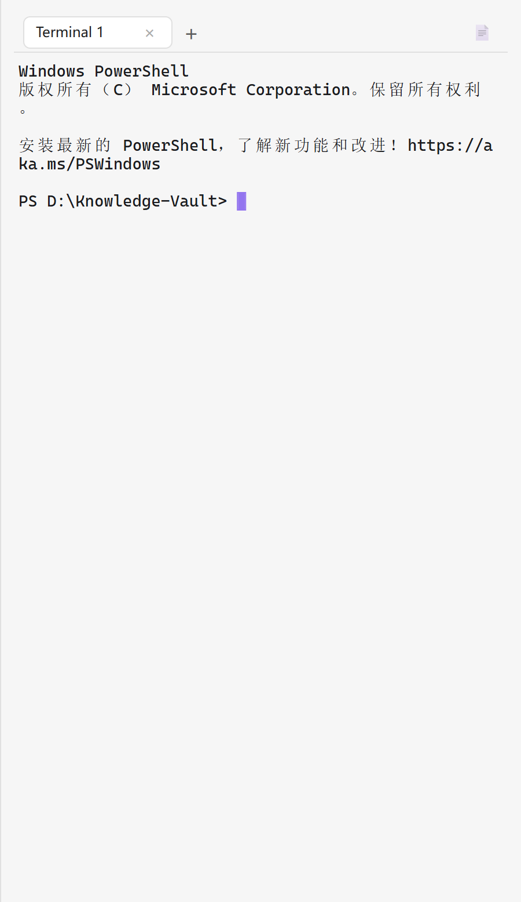
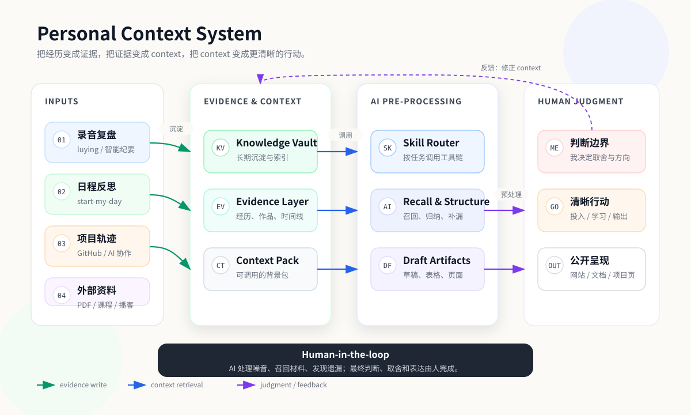
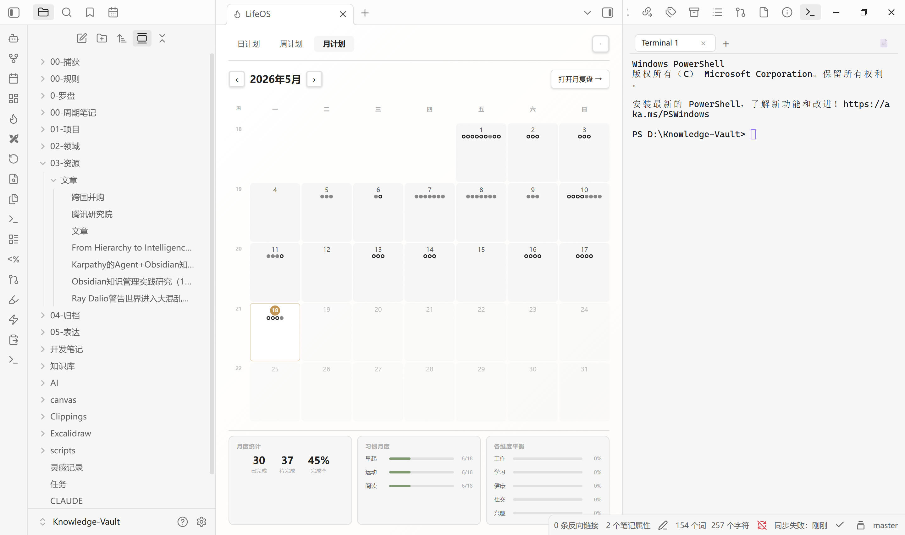
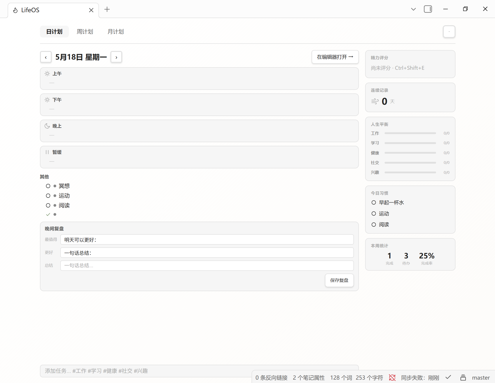
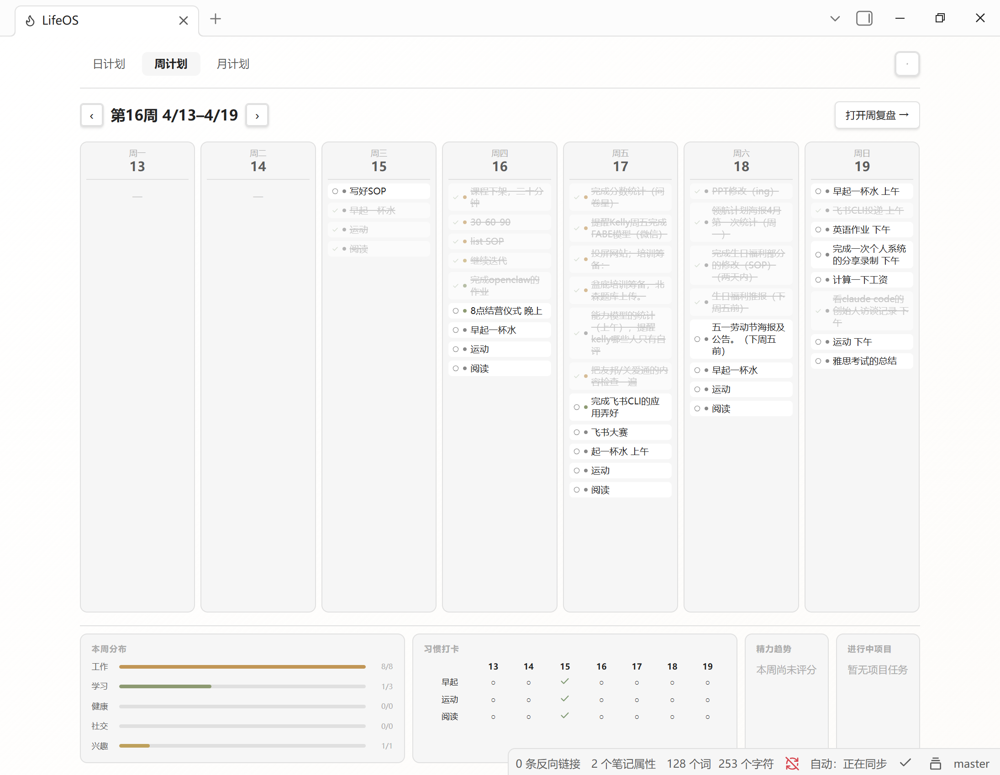
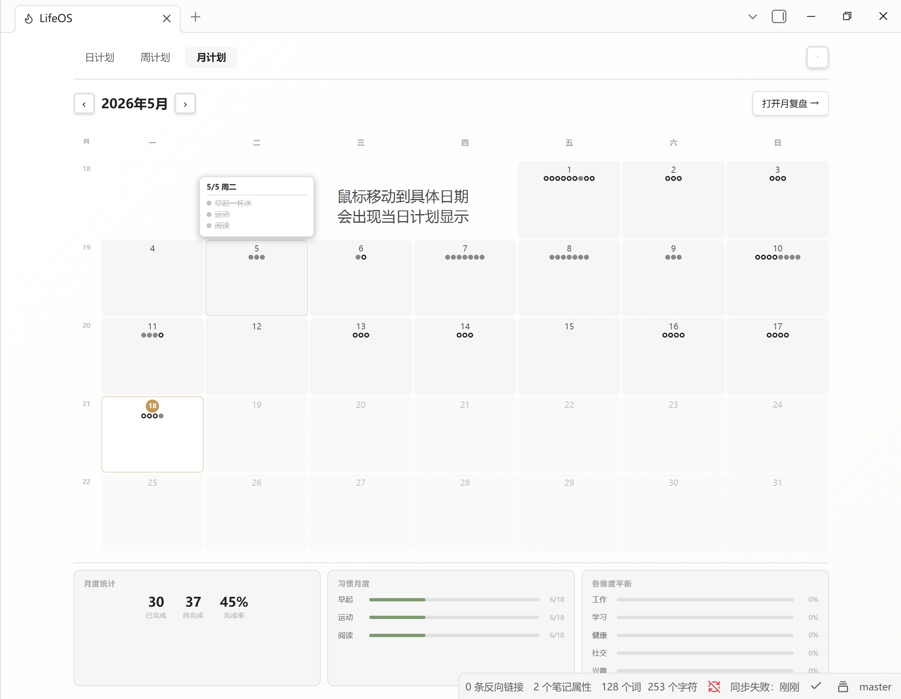

我一直在尝试解决一个很具体的问题：当我和 AI 协作时，怎样让它不再从空白 prompt 开始？
许多经历、项目、复盘和知识笔记分散在很多地方。为了让 AI 理解我，每次需要将过往的经历重复性地输入，只是这样 AI 很容易遗漏真正重要的背景，也存在背景信息的 context 提供不够，AI 无法分辨我真实的需求，混淆我和 AI 协作过程中能力的边界。
所以我开始维护一个自己 context 系统：把个人画像、经历证据、项目时间线、录音复盘和 AI 协作记录沉淀进知识库，再用一组真实使用的 skill 把它们串起来。
在日常复盘里，luying 会把录音转成文本，start-my-day 帮我每日把反思整理成下一步任务；在资料处理里，mineru-pdf 和 html-to-pptx 帮我处理 PDF、Markdown、HTML、PPT 之间的信息转换。
系统的核心不是让 AI 替我做决定，而是让 AI 先处理噪音、召回材料、发现遗漏。最终什么能公开、什么应该保留、什么应该删掉，仍然由我来判断。
而这个项目最重要的意义是：就是把经历变成证据，把证据变成 context，把 context 变成更清晰的行动。
经历、项目、复盘、知识笔记、录音和 AI 协作记录。
个人画像、项目时间线、经历材料和过程记录进入知识库。
不再依赖一次性 prompt，而是长期维护可复用背景。
处理噪音、召回材料、整理结构、发现遗漏。
公开边界、取舍、修改和最终行动仍由我负责。
把每日口播复盘转成文本，再整理成任务、复盘和下一步行动。它的意义不是“自动转写”，而是让模糊想法进入可检索、可反复加工的知识库。
处理 PDF、Markdown、HTML、PPT 之间的信息转换。它们解决的是 AI 输入和输出两端的损失：资料怎样进入 AI，AI 的产物又怎样回到人类可编辑的工作流。
用日 / 周 / 月三层视图承接任务和复盘，把个人知识库从“资料仓库”变成每天都能打开、能推动行动的工作台。
二次开发 Obsidian 终端插件，加入 Tab 多页、上下分屏、主题色适配和一键复制路径，让知识库、shell 和 AI 工具链贴近同一个工作界面。

这套系统不是只停留在概念图里。日 / 周 / 月三层 LifeOS 视图，承接了我的日常任务、复盘和计划；AI Terminal 则把知识库、shell 和 AI 工具链放到同一个工作界面里。




这个系统让我更清楚地区分了 AI 和人的边界。AI 适合召回材料、初步归类、提取结构、发现遗漏，也适合把重复流程工具化。
但什么是真实重要的，什么可以公开，什么应该保留，什么应该删掉，仍然必须由我来判断。对我来说，这比“自动化程度”更重要。